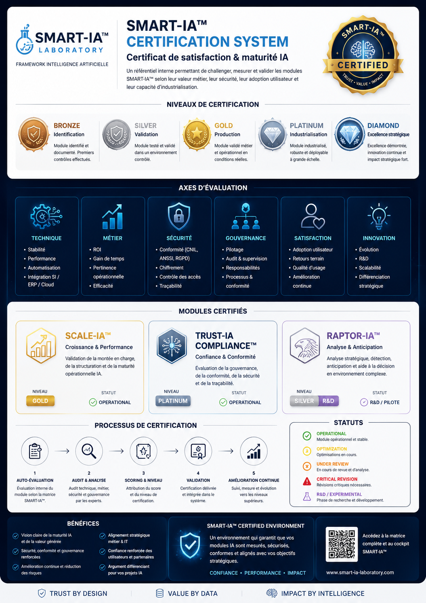

SCALE-IA™
Validation de la montée en charge, de la structuration et de la maturité opérationnelle IA.
GoldAdvanced Strategic Artificial Intelligence Research
___
Une architecture de frameworks IA conçue pour transformer
les données complexes en décisions exploitables.
CERTIFICATION SMART-IA™ structure une approche de validation analytique, de gouvernance et de conformité appliquée aux architectures intelligentes et frameworks stratégiques.
Cette démarche vise à renforcer la crédibilité, la stabilité, la supervision et la cohérence des environnements SMART-IA™.
L’objectif est d’intégrer des mécanismes de lecture analytique, de conformité, de gouvernance et de supervision stratégique dans les architectures IA complexes.
Un référentiel interne permettant de challenger, mesurer et valider les modules SMART-IA™ selon leur valeur métier, leur sécurité, leur adoption utilisateur et leur capacité d’industrialisation.
Validation de la montée en charge, de la structuration et de la maturité opérationnelle IA.
Gold
Évaluation de la gouvernance, conformité, sécurité, traçabilité et confiance numérique.
Platinum
Analyse stratégique, détection, anticipation et aide à la décision en environnement complexe.
Silver R&DStabilité, performance, automatisation, intégration SI.
ROI, gain de temps, pertinence opérationnelle.
CNIL, ANSSI, accès, chiffrement, traçabilité.
Pilotage, audit, supervision, responsabilités.
Adoption utilisateur, retours terrain, amélioration continue.
Évolution, R&D, scalabilité, différenciation stratégique.
Bronze — Module identifié
Silver — Module testé
Gold — Module validé métier
Platinum — Module industrialisable
Diamond — Excellence stratégique

SMART VALIDATION CORE™ constitue le moteur analytique de validation, de supervision et de contrôle des frameworks intelligents.
Cette sous-couche permet de corréler les flux analytiques, les architectures techniques, les indicateurs de conformité et les éléments de gouvernance stratégique.
Module dédié à la validation des architectures analytiques et de leur cohérence stratégique.
Module de supervision conformité et résilience numérique appliqué aux environnements sensibles.
Module de contrôle analytique des architectures intelligentes et des couches décisionnelles.
SMART VALIDATION CORE™
Gouvernance • Validation • Architecture • Conformité • Analyse • Intelligence